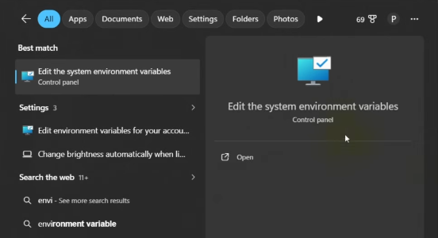
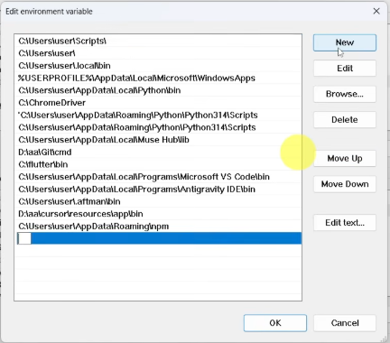
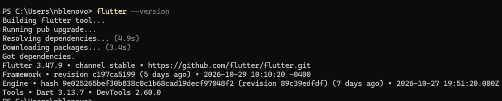
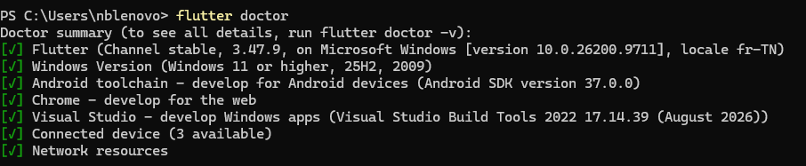
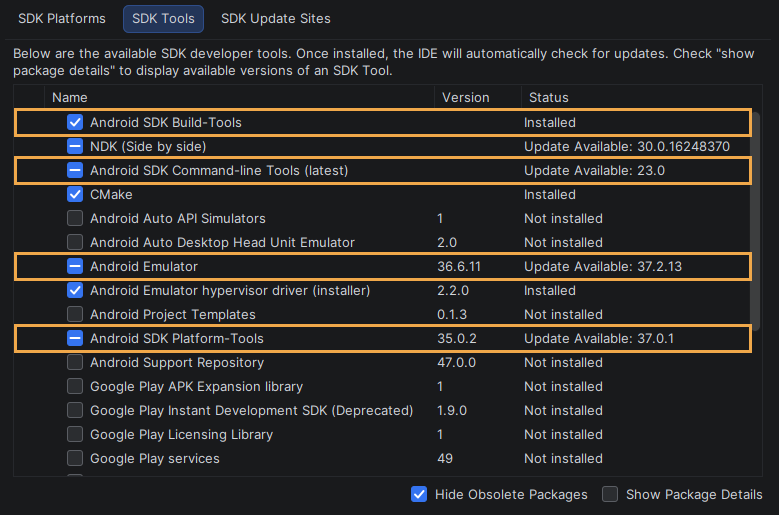
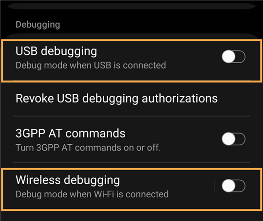
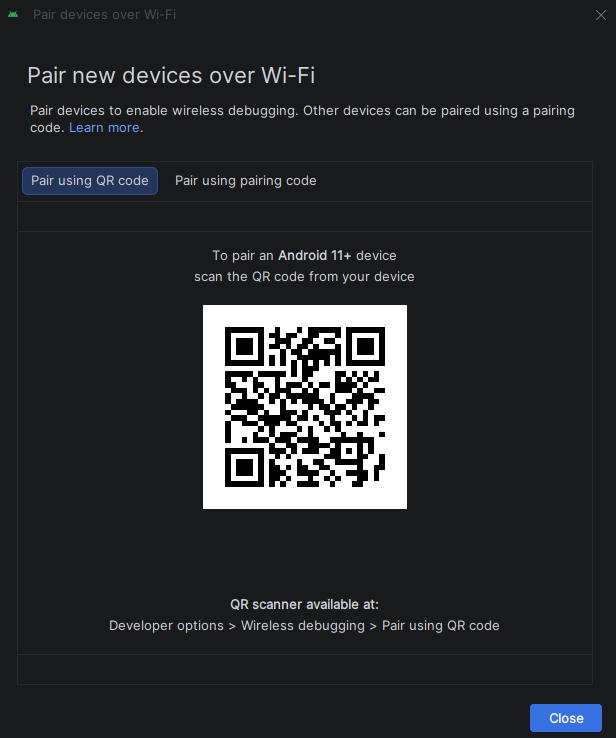
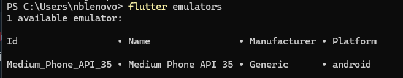
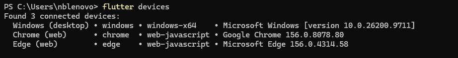

Prérequis — à installer avant la séance
Téléchargez et installez ces outils avant la séance (gros téléchargements : le Wi-Fi de la salle peut être lent). L'étape 0 ne fait que vérifier et configurer ces installations.
- Installer Flutter et lancer une application sur un appareil Android
- Construire un écran avec des widgets et utiliser le hot reload
- Enregistrer des notes dans une base SQLite locale (sqflite)
- Lire, ajouter, modifier et supprimer des notes avec un formulaire et la navigation
| Outil | Rôle | Notes |
|---|---|---|
| SDK Flutter (dernière stable 3.47.x, zip Windows) | Le framework | docs.flutter.dev/install/manual — à extraire dans C:\Users\<name>\develop |
| Git for Windows | Prérequis du SDK Flutter | git-scm.com/downloads/win |
| Android Studio (version complète) | Fournit le SDK Android, les outils, les licences et l'émulateur | developer.android.com/studio — au moins 7,5 Go libres, 10 Go recommandés. Utilisé pour le SDK, pas comme éditeur. |
| Visual Studio Code + l'extension Flutter | L'éditeur (l'extension Flutter installe aussi l'extension Dart) | code.visualstudio.com |
| Téléphone Android + câble USB (recommandé) | Lancer l'application sans émulateur | Activer les options pour les développeurs + le débogage USB (étape 0) |
À vérifier avant la séance
- Espace disque : au moins 10 Go libres
- Le zip Flutter est téléchargé (ne pas l'extraire dans
C:\Program Filesni dans un chemin avec des espaces) - Android Studio s'ouvre et a terminé son assistant de premier lancement
- VS Code s'ouvre et l'extension Flutter est installée
Path sous Windows 11 : How To Install Flutter In Windows 11. Elle ne couvre ni Android Studio ni le téléphone : c'est le rôle de l'étape 0.L'application cible Android (téléphone ou émulateur) : sqflite ne fonctionne ni sur Windows desktop ni sur le web.
Étape 0 — Installation
Flutter compile votre code Dart en application Android : il a besoin du SDK Flutter, du SDK Android (fourni par Android Studio) et d'un appareil. flutter doctor vérifie tout cela d'un coup.
- Vérifiez que Git for Windows est installé :
git --version - Extrayez le zip du SDK dans
C:\Users\<name>\developpour obtenirC:\Users\<name>\develop\flutter. Pas d'espaces ni de caractères spéciaux dans le chemin, pas dansC:\Program Files: les outils Flutter échouent sur ces chemins. - Ajoutez cette entrée au
Pathutilisateur (Win + Pause → Paramètres système avancés → Variables d'environnement →Pathutilisateur → Nouveau), puis montez-la tout en haut :%USERPROFILE%\develop\flutter\bin
Cherchez « variables d'environnement » et ouvrez Modifier les variables d'environnement système. Image extraite de la vidéo How To Install Flutter In Windows 11. 
Dans le Pathutilisateur, cliquez sur Nouveau et collez l'entrée. Votre liste d'entrées sera différente ; la vidéo installe dansC:\flutter, nous utilisonsdevelop. Image extraite de la même vidéo. - Fermez et rouvrez tous les terminaux et VS Code. Un programme ne lit le
Pathqu'au démarrage. - Vérifiez l'installation :
flutter --version dart --version flutter doctor
Résultat attendu de flutter --version: Flutter 3.47.9, canal stable.
Résultat attendu de flutter doctor: coches vertes pour Flutter, Android toolchain et Connected device. - Ouvrez Android Studio → More Actions → SDK Manager et installez : Android SDK Platform, SDK Command-line Tools, Build-Tools, Platform-Tools, Android Emulator.

Android Studio → Settings → Languages & Frameworks → Android SDK → onglet SDK Tools. Cochez les outils entourés : Build-Tools, Command-line Tools, Platform-Tools et Emulator. Un tiret signifie installé avec une mise à jour disponible. - Acceptez les licences Android (répondez
yà chaque question) :flutter doctor --android-licenses - Choisissez une cible :
- Téléphone (recommandé, le plus rapide) : Paramètres → À propos du téléphone → touchez 7 fois « Numéro de build » pour activer les options pour les développeurs, puis activez le débogage USB. Branchez le câble : le téléphone demande « Autoriser le débogage USB ? », touchez Autoriser (cochez « Toujours autoriser sur cet ordinateur »). C'est la demande RSA ; le téléphone apparaît ensuite dans
flutter devices. Si Windows ne voit pas le téléphone, installez le pilote Google USB.
Sur le téléphone : Paramètres → Options pour les développeurs. Activez le débogage USB (entouré, désactivé ici). Le débogage sans fil est l'alternative Wi-Fi facultative ci-dessous. Les noms des menus varient selon la marque. - Téléphone en Wi-Fi (Android 11+, facultatif) : activez le débogage sans fil dans les options pour les développeurs. Dans Android Studio, ouvrez Device Manager → Pair devices over Wi-Fi, puis scannez le code QR avec le téléphone (Débogage sans fil → Associer avec un code QR). Le PC et le téléphone doivent être sur le même réseau Wi-Fi, et certains réseaux partagés ou scolaires le bloquent : si l'association échoue, utilisez le câble USB.

Android Studio : scannez ce code QR avec le téléphone, dans Options pour les développeurs → Débogage sans fil → Associer avec un code QR. - Émulateur : Android Studio → Device Manager → créez un appareil virtuel. Nécessite la virtualisation activée dans le BIOS : peut être lent ou indisponible sur les PC de la salle.

Exemple de flutter emulators: un émulateur Android est disponible. Démarrez-le depuis Device Manager, puis revérifiez avecflutter devices. - Navigateur (Chrome), solution de secours : pas d'appareil Android (par exemple un iPhone : on ne peut pas compiler pour iOS sous Windows), ou Android Studio ne fonctionne pas ? Lancez dans Chrome avec
flutter run -d chrome. Cela fonctionne pour les étapes 0 à 2 (mise en page et hot reload). À partir de l'étape 3, la base de données (sqflite) ne tourne pas dans un navigateur : mettez-vous en binôme avec un voisin qui a un appareil Android pour la suite.
flutter devices
Exemple de flutter devicessans appareil Android : seulement Windows, Chrome et Edge. Branchez le téléphone ou démarrez l'émulateur jusqu'à ce qu'un appareil Android apparaisse, puis utilisez-le (pas Windows ni Chrome). - Téléphone (recommandé, le plus rapide) : Paramètres → À propos du téléphone → touchez 7 fois « Numéro de build » pour activer les options pour les développeurs, puis activez le débogage USB. Branchez le câble : le téléphone demande « Autoriser le débogage USB ? », touchez Autoriser (cochez « Toujours autoriser sur cet ordinateur »). C'est la demande RSA ; le téléphone apparaît ensuite dans
flutter doctor affiche pour Flutter et Android toolchain, et flutter devices liste votre téléphone ou émulateur. Les avertissements pour Chrome, Visual Studio ou Xcode peuvent être ignorés.Pas de checkpoint pour cette étape : il n'y a pas encore de code, seulement l'installation. Corrigez les erreurs ci-dessous, ou demandez à l'enseignant ou à un voisin.
| Erreur / symptôme | Cause | Solution |
|---|---|---|
'flutter' is not recognized | PATH non appliqué | Rouvrez le terminal ; vérifiez que le chemin se termine par \flutter\bin ; cherchez une faute de frappe. |
flutter.bat absent de bin | Quarantaine de l'antivirus | Ajoutez le dossier du SDK aux exclusions de l'antivirus, puis extrayez à nouveau. |
| Licences Android non acceptées | flutter doctor --android-licenses, répondez y. | |
cmdline-tools component is missing | Non installé | Android Studio → SDK Manager → SDK Tools → Android SDK Command-line Tools. |
Le téléphone n'apparaît pas dans flutter devices | Débogage USB désactivé / pilote | Réactivez le débogage USB, acceptez la demande RSA sur le téléphone, installez le pilote USB, essayez un autre câble. |
| L'émulateur ne démarre pas | Virtualisation désactivée | Activez VT-x/AMD-V dans le BIOS ou utilisez un téléphone. |
Building with plugins requires symlink support | Windows a besoin du mode développeur pour les plugins | Paramètres → Espace développeurs → Mode développeur activé, puis flutter pub get. |
Étape 1 — Premier lancement
flutter create génère une application complète (un compteur). Le hot reload injecte le code modifié dans l'app en cours d'exécution sans perdre son état : c'est ce qui rend Flutter rapide à développer.
- Ouvrez un terminal dans un dossier sans espaces (par exemple
C:\Users\<name>\projects), créez le projet et ouvrez-le dans VS Code :flutter create notes_app cd notes_app code . - Branchez le téléphone (ou démarrez l'émulateur) et lancez l'app depuis le dossier
notes_app. Si Flutter propose plusieurs appareils, choisissez l'appareil Android (pas Windows ni Chrome). La première compilation est longue (plusieurs minutes : Gradle télécharge ses dépendances).flutter run - Touchez le bouton + plusieurs fois : le compteur augmente.
- Dans
lib/main.dart, trouvez le texte'Flutter Demo Home Page'(dansMyHomePage(title: ...)) et remplacez-le par'My first app'. Enregistrez, puis appuyez surrdans le terminal : le titre change et le compteur garde sa valeur. - Appuyez sur
R(hot restart) : l'app redémarre et le compteur revient à 0. (qarrête l'app ; laissez-la tourner pour l'instant.)
r le compteur garde sa valeur, après R il revient à 0.Checkpoint : tag step-1. Téléchargez https://github.com/<user>/flutter-notes-solution/archive/refs/tags/step-1.zip, décompressez-le dans un dossier sans espaces, puis lancez flutter pub get et flutter run.
| Erreur / symptôme | Cause | Solution |
|---|---|---|
Le téléphone n'apparaît pas dans flutter devices | Débogage USB désactivé / pilote | Réactivez le débogage USB, acceptez la demande RSA sur le téléphone, installez le pilote USB, essayez un autre câble. |
| Téléphone : l'app s'installe mais plante au démarrage | Conflit avec une ancienne installation | flutter clean, désinstallez l'app du téléphone, puis flutter run. |
| Erreurs sqflite sur Windows ou Chrome | sqflite ne supporte ni Windows desktop ni le web | Choisissez l'appareil Android : flutter devices, puis flutter run -d <id>. |
Étape 2 — Widgets & mise en page
Scaffold, ListView, Card et ListTile.En Flutter, tout est un widget, et l'écran est un arbre de widgets. Un StatelessWidget n'a pas de données qui changent. Scaffold est le squelette d'une page (barre d'app, corps, bouton flottant) et ListView.builder ne construit que les lignes visibles à l'écran.
- Remplacez tout le contenu de
lib/main.dartpar :lib/main.dartimport 'package:flutter/material.dart'; void main() { // Every Dart program starts here runApp(const NotesApp()); // Show NotesApp on screen } class NotesApp extends StatelessWidget { // Root widget: nothing in it changes, so it is Stateless const NotesApp({super.key}); @override Widget build(BuildContext context) { // Describes the screen; Flutter calls it on every redraw return MaterialApp( // Sets up Material Design, the theme and the first screen title: 'Notes', theme: ThemeData( colorScheme: ColorScheme.fromSeed(seedColor: Colors.indigo), // Builds a full color palette from one color ), home: const NotesListScreen(), // The first screen shown ); } } class NotesListScreen extends StatelessWidget { // A screen with fixed content for now const NotesListScreen({super.key}); @override Widget build(BuildContext context) { // Describes the screen; Flutter calls it on every redraw final titles = ['Buy milk', 'Prepare Flutter session', 'Call Sami']; // Hard-coded data, replaced by SQLite in Step 4 return Scaffold( // Page skeleton: app bar, body, floating button appBar: AppBar(title: const Text('My Notes')), // Top bar with the title body: ListView.builder( // Scrollable list that builds only the visible rows itemCount: titles.length, // How many rows itemBuilder: (context, index) { // Called once per row; index is the row number return Card( // One card per row margin: const EdgeInsets.symmetric(horizontal: 12, vertical: 6), // Space around the card child: ListTile( // Standard row: title and subtitle title: Text(titles[index]), // Title of this row subtitle: const Text('Tap to open'), ), ); }, ), floatingActionButton: FloatingActionButton( // The round + button onPressed: () {}, // Does nothing yet child: const Icon(Icons.add), // The + icon ), ); } } - Enregistrez et appuyez sur
R(hot restart) :main()a changé, le hot reload ne suffit pas. - Reliez le code à l'écran :
AppBar→ la barre de titre ;itemCount→ le nombre de lignes ;itemBuilder→ construit uneCardpar titre ; le bouton flottant ne fait rien pour l'instant (onPressed: () {}). - Modifiez un titre de la liste
titles, enregistrez et appuyez surr: la liste se met à jour instantanément. - Le fichier
test/widget_test.dartaffiche maintenant une erreur (il utiliseMyApp, qui n'existe plus). Supprimez ce fichier pour cette séance : il ne bloque pasflutter run.
Checkpoint : tag step-2. Téléchargez https://github.com/<user>/flutter-notes-solution/archive/refs/tags/step-2.zip, décompressez-le dans un dossier sans espaces, puis lancez flutter pub get et flutter run.
| Erreur / symptôme | Cause | Solution |
|---|---|---|
Rien ne change après r | main() ou le widget racine a changé : le hot reload ne relance pas main() | Appuyez sur R (hot restart). |
The name 'MyApp' isn't a class dans test/widget_test.dart | Le test généré utilise l'ancienne classe | Supprimez test/widget_test.dart. |
Étape 3 — Modèle & base de données
Note et la classe DatabaseHelper, puis tester une insertion.SQLite est une base de données stockée dans un fichier sur le téléphone ; sqflite est le plugin qui y accède. La classe Note se convertit en Map (une ligne de la table) et inversement. DatabaseHelper est un singleton : une seule connexion pour toute l'app. onCreate ne s'exécute qu'une fois, quand le fichier de base est créé.
- Arrêtez l'app (
q) et ajoutez les packages. Utilisezflutter pub add(n'écrivez pas les versions à la main) : pub choisit des versions compatibles.flutter pub add sqflite path - Créez le modèle :
lib/models/note.dartclass Note { final int? id; // Null before insert: SQLite generates it final String title; final String content; final DateTime createdAt; const Note({ // Constructor with named parameters this.id, required this.title, required this.content, required this.createdAt, }); // Convert a Note to a Map for SQLite. Map<String, Object?> toMap() => { 'id': id, 'title': title, 'content': content, 'created_at': createdAt.toIso8601String(), // DateTime is stored as ISO 8601 text }; // Build a Note from a SQLite row. factory Note.fromMap(Map<String, Object?> map) => Note( id: map['id'] as int?, // Cast each raw value to its real type title: map['title'] as String, content: map['content'] as String, createdAt: DateTime.parse(map['created_at'] as String), // Text back to a DateTime ); } - Créez la classe d'accès à la base.
idest null avant l'insertion : SQLite le génère (AUTOINCREMENT). La date est stockée en texte ISO 8601.lib/data/database_helper.dartimport 'package:path/path.dart'; import 'package:sqflite/sqflite.dart'; import '../models/note.dart'; class DatabaseHelper { DatabaseHelper._(); // Private constructor: nobody else can create one static final DatabaseHelper instance = DatabaseHelper._(); // The single shared instance (singleton) static Database? _db; // The open connection, kept after the first use Future<Database> get database async => _db ??= await _open(); // Open the database only the first time Future<Database> _open() async { final path = join(await getDatabasesPath(), 'notes.db'); // Where the file lives on the device return openDatabase( // Opens the file, creates it if missing path, version: 1, // Schema version: raise it when the schema changes onCreate: (db, version) async { // Runs only when the file is first created // Create the notes table (SQL) await db.execute(''' CREATE TABLE notes ( id INTEGER PRIMARY KEY AUTOINCREMENT, title TEXT NOT NULL, content TEXT NOT NULL, created_at TEXT NOT NULL ) '''); }, ); } Future<int> insert(Note note) async { // Add a note, returns the new id final db = await database; // Get the open database final values = note.toMap()..remove('id'); // let SQLite generate the id return db.insert('notes', values); // INSERT INTO notes } Future<List<Note>> getAll() async { // Read all the notes final db = await database; // Get the open database final rows = await db.query('notes', orderBy: 'created_at DESC'); // SELECT, newest first return rows.map(Note.fromMap).toList(); // Turn each row (Map) into a Note } Future<int> update(Note note) async { // Change an existing note final db = await database; // Get the open database return db.update( 'notes', note.toMap(), where: 'id = ?', // Only the row with this id whereArgs: [note.id], // Replaces the ? safely (no SQL injection) ); } Future<int> delete(int id) async { // Remove a note by id final db = await database; // Get the open database return db.delete('notes', where: 'id = ?', whereArgs: [id]); // DELETE FROM notes WHERE id = ? } } - Dans
lib/main.dart, ajoutez ces imports sous l'import dematerial.dart:import 'data/database_helper.dart'; import 'models/note.dart'; - Toujours dans
lib/main.dart, remplacez seulement la fonctionmain()par ce test temporaire :void main() async { // async because we await the database below WidgetsFlutterBinding.ensureInitialized(); // Required before using a plugin ahead of runApp final id = await DatabaseHelper.instance.insert( // Temporary test: insert one note Note(title: 'Test', content: 'Hello', createdAt: DateTime.now()), ); debugPrint('Inserted note with id $id'); // Printed in the console runApp(const NotesApp()); // Show NotesApp on screen } - Relancez complètement l'app (nouveau plugin : un hot reload ne suffit pas) :
flutter run - Regardez la console (terminal ou Debug Console de VS Code). Chaque lancement insère une nouvelle note (id 1, 2, 3…). Gardez ce test pour l'instant : ces notes apparaîtront à l'étape 4, où
main.dartsera remplacé.
Inserted note with id 1 dans la console. L'écran affiche toujours la liste statique : c'est normal, il ne lit pas encore la base.Checkpoint : tag step-3. Téléchargez https://github.com/<user>/flutter-notes-solution/archive/refs/tags/step-3.zip, décompressez-le dans un dossier sans espaces, puis lancez flutter pub get et flutter run.
| Erreur / symptôme | Cause | Solution |
|---|---|---|
MissingPluginException pour sqflite | Hot reload après l'ajout d'un plugin | Arrêtez l'app (q) et relancez flutter run (redémarrage complet). |
Building with plugins requires symlink support | Windows a besoin du mode développeur pour les plugins | Paramètres → Espace développeurs → Mode développeur activé, puis flutter pub get. |
| Erreurs sqflite sur Windows ou Chrome | sqflite ne supporte ni Windows desktop ni le web | Choisissez l'appareil Android : flutter devices, puis flutter run -d <id>. |
Étape 4 — Lire et supprimer
Un StatefulWidget garde des données qui changent (_notes, _loading). initState s'exécute une fois à l'ouverture de l'écran : on y charge les notes. setState dit à Flutter de redessiner. if (!mounted) return; évite d'utiliser un écran fermé pendant un await. Dismissible ajoute le geste de glissement.
- Le nouvel écran de liste ouvre
AddEditNoteScreen, qu'on écrira à l'étape 5. Créez d'abord ce fichier temporaire pour que le code compile :lib/screens/add_edit_note_screen.dartimport 'package:flutter/material.dart'; import '../models/note.dart'; // Temporary placeholder: replaced by the real form in Step 5. class AddEditNoteScreen extends StatelessWidget { final Note? note; const AddEditNoteScreen({super.key, this.note}); @override Widget build(BuildContext context) { // Describes the screen; Flutter calls it on every redraw return Scaffold( // Page skeleton: app bar, body, floating button appBar: AppBar(title: const Text('New note')), body: const Center(child: Text('Coming in Step 5')), ); } } - Créez l'écran de liste :
lib/screens/notes_list_screen.dartimport 'package:flutter/material.dart'; import '../data/database_helper.dart'; import '../models/note.dart'; import 'add_edit_note_screen.dart'; class NotesListScreen extends StatefulWidget { // Stateful: the list of notes changes over time const NotesListScreen({super.key}); @override State<NotesListScreen> createState() => _NotesListScreenState(); // Creates the object that holds the data } class _NotesListScreenState extends State<NotesListScreen> { // The data and the logic live here List<Note> _notes = []; // The notes currently shown bool _loading = true; // True until the first load ends @override void initState() { // Runs once when the screen opens super.initState(); _loadNotes(); // Load the notes from SQLite } Future<void> _loadNotes() async { // Read the database, then redraw final notes = await DatabaseHelper.instance.getAll(); // Wait for the rows if (!mounted) return; // Stop if the screen was closed in the meantime setState(() { // Tell Flutter to redraw with the new data _notes = notes; _loading = false; }); } Future<void> _openEditor([Note? note]) async { // Open the form: no note = add, a note = edit final changed = await Navigator.push<bool>( // Open a new screen and wait for its result context, MaterialPageRoute(builder: (_) => AddEditNoteScreen(note: note)), // The screen to open ); if (changed == true) _loadNotes(); // The form saved something: reload the list } Future<void> _deleteNote(Note note) async { // Delete from the database, then refresh await DatabaseHelper.instance.delete(note.id!); // ! because id is never null once read from the DB await _loadNotes(); } @override Widget build(BuildContext context) { // Describes the screen; Flutter calls it on every redraw return Scaffold( // Page skeleton: app bar, body, floating button appBar: AppBar(title: const Text('My Notes')), // Top bar with the title body: _loading // Show a spinner, the empty message or the list ? const Center(child: CircularProgressIndicator()) // Still loading : _notes.isEmpty // Loaded, but is it empty? ? const Center(child: Text('No notes yet. Tap + to add one.')) // Empty-state message : ListView.builder( itemCount: _notes.length, itemBuilder: (context, index) { // Called once per row; index is the row number final note = _notes[index]; // The note for this row return Dismissible( // Makes the row swipeable key: ValueKey(note.id), // Unique key so Flutter tracks each row direction: DismissDirection.endToStart, // Swipe from right to left only background: Container( // Red area shown while swiping color: Colors.red, alignment: Alignment.centerRight, padding: const EdgeInsets.only(right: 20), child: const Icon(Icons.delete, color: Colors.white), ), onDismissed: (_) => _deleteNote(note), // After the swipe: delete the note child: Card( margin: const EdgeInsets.symmetric( horizontal: 12, vertical: 6, ), child: ListTile( // Standard row: title and subtitle title: Text(note.title), subtitle: Text( note.content, maxLines: 2, // At most 2 lines overflow: TextOverflow.ellipsis, // Add ... when the text is too long ), onTap: () => _openEditor(note), // Tap a row to edit it ), ), ); }, ), floatingActionButton: FloatingActionButton( // The round + button onPressed: () => _openEditor(), // The + button opens the form to add child: const Icon(Icons.add), // The + icon ), ); } } - Faites le lien entre le code et l'écran :
_loadNotes()lit la base et appellesetState: c'est ce qui redessine la liste. Elle est lancée une fois depuisinitState._loadinget_notes.isEmptychoisissent ce qui s'affiche : un indicateur de chargement, le message de liste vide, ou la liste.Dismissibleenveloppe chaque ligne : la glisser vers la gauche appelle_deleteNote, qui supprime dans SQLite puis recharge.if (!mounted) return;arrête le code si l'écran a été fermé pendant l'await.
- Remplacez tout
lib/main.dartpar sa version finale. Cela supprime la liste statique et le test de l'étape 3 ; les notes déjà insérées restent dans la base.lib/main.dartimport 'package:flutter/material.dart'; import 'screens/notes_list_screen.dart'; void main() { // Every Dart program starts here runApp(const NotesApp()); // Show NotesApp on screen } class NotesApp extends StatelessWidget { // Root widget: nothing in it changes, so it is Stateless const NotesApp({super.key}); @override Widget build(BuildContext context) { // Describes the screen; Flutter calls it on every redraw return MaterialApp( // Sets up Material Design, the theme and the first screen title: 'Notes', theme: ThemeData( colorScheme: ColorScheme.fromSeed(seedColor: Colors.indigo), // Builds a full color palette from one color ), home: const NotesListScreen(), // The first screen shown ); } } - Appuyez sur
R(hot restart), ou relancezflutter runsi l'app est arrêtée. - Glissez une note de droite à gauche : elle est supprimée. Arrêtez l'app (
q) et relancezflutter run: la note supprimée ne revient pas. - Touchez + : l'écran temporaire « Coming in Step 5 » s'ouvre ; la flèche retour ramène à la liste.
Checkpoint : tag step-4. Téléchargez https://github.com/<user>/flutter-notes-solution/archive/refs/tags/step-4.zip, décompressez-le dans un dossier sans espaces, puis lancez flutter pub get et flutter run.
| Erreur / symptôme | Cause | Solution |
|---|---|---|
LateInitializationError / id null à la suppression | Note non rechargée depuis la base | Lisez toujours les notes avec getAll() avant de supprimer ; id n'est null qu'avant l'insertion. |
setState() called after dispose() | Appel asynchrone terminé après avoir quitté l'écran | Protégez avec if (!mounted) return;. |
Don't use 'BuildContext's across async gaps | context utilisé après un await | Vérifiez if (!mounted) return; avant d'utiliser context. |
Target of URI doesn't exist: 'add_edit_note_screen.dart' | Le fichier temporaire manque | Faites l'instruction 1 (le fichier va dans lib/screens/). |
| La liste est vide tout de suite | Le test de l'étape 3 n'a jamais tourné | Normal : vous ajouterez des notes à l'étape 5. |
Recherche : ajoutez un champ de recherche qui filtre les notes par titre. Indice : une méthode dans DatabaseHelper avec db.query('notes', where: 'title LIKE ?', whereArgs: ['%$query%']).
Étape 5 — Formulaire & navigation
Navigator.push.Navigator.push ouvre un écran par-dessus le précédent ; Navigator.pop(context, true) le ferme et renvoie un résultat, et la liste se recharge. Form + GlobalKey<FormState> valide tous les champs d'un coup. Un TextEditingController contient le texte d'un champ et doit être libéré dans dispose. Le même écran sert à créer (note == null) et à modifier.
- Remplacez le contenu temporaire de
lib/screens/add_edit_note_screen.dartpar :lib/screens/add_edit_note_screen.dartimport 'package:flutter/material.dart'; import '../data/database_helper.dart'; import '../models/note.dart'; class AddEditNoteScreen extends StatefulWidget { final Note? note; // null = create, not null = edit const AddEditNoteScreen({super.key, this.note}); @override State<AddEditNoteScreen> createState() => _AddEditNoteScreenState(); } class _AddEditNoteScreenState extends State<AddEditNoteScreen> { final _formKey = GlobalKey<FormState>(); // Lets us validate the whole form at once late final TextEditingController _titleController; // Reads and sets the Title field text late final TextEditingController _contentController; // Reads and sets the Content field text bool get _isEditing => widget.note != null; // True when editing an existing note @override void initState() { // Runs once when the screen opens super.initState(); _titleController = TextEditingController(text: widget.note?.title ?? ''); // Start with the note title, or empty _contentController = // Same for the content TextEditingController(text: widget.note?.content ?? ''); } @override void dispose() { // Runs when the screen is closed _titleController.dispose(); // Free the controller _contentController.dispose(); // Free the controller super.dispose(); } Future<void> _save() async { // Called by the Save button if (!_formKey.currentState!.validate()) return; // Stop if a field is invalid final note = Note( // Build the note from the form id: widget.note?.id, // Keep the id when editing title: _titleController.text.trim(), // What was typed, without extra spaces content: _contentController.text.trim(), createdAt: widget.note?.createdAt ?? DateTime.now(), // Keep the original date when editing ); if (_isEditing) { // Editing: UPDATE. Otherwise: INSERT await DatabaseHelper.instance.update(note); } else { await DatabaseHelper.instance.insert(note); } if (!mounted) return; // Stop if the screen was closed in the meantime Navigator.pop(context, true); // tell the list to refresh } @override Widget build(BuildContext context) { // Describes the screen; Flutter calls it on every redraw return Scaffold( // Page skeleton: app bar, body, floating button appBar: AppBar(title: Text(_isEditing ? 'Edit note' : 'New note')), // Title depends on the mode body: Padding( padding: const EdgeInsets.all(16), child: Form( // Groups the fields so they can be validated key: _formKey, // Connects the form to its key child: Column( // Fields stacked vertically children: [ TextFormField( // A text input controller: _titleController, // Connect the field to its controller decoration: const InputDecoration( labelText: 'Title', border: OutlineInputBorder(), ), validator: (value) => (value == null || value.trim().isEmpty) // Return an error message, or null if valid ? 'Title is required' : null, ), const SizedBox(height: 16), // Vertical gap Expanded( // Takes all the remaining height child: TextFormField( controller: _contentController, // Connect the field to its controller decoration: const InputDecoration( labelText: 'Content', border: OutlineInputBorder(), alignLabelWithHint: true, ), maxLines: null, // Any number of lines expands: true, // Fill the available space textAlignVertical: TextAlignVertical.top, validator: (value) => // Return an error message, or null if valid (value == null || value.trim().isEmpty) ? 'Content is required' : null, ), ), const SizedBox(height: 16), // Vertical gap SizedBox( width: double.infinity, // Full width child: FilledButton( // The Save button onPressed: _save, // Run _save when tapped child: const Text('Save'), ), ), ], ), ), ), ); } } - Faites le lien entre le code et l'écran :
widget.noteest la note reçue :nullsignifie une nouvelle note, sinon on modifie._isEditingpilote le titre et le choix entre insertion et mise à jour.- Chaque
TextEditingControllergarde le texte d'un champ et démarre avec les valeurs de la note ;disposeles libère. validatorrenvoie un message d'erreur ounull;_formKey.currentState!.validate()les exécute tous quand vous touchez Save.Navigator.pop(context, true)ferme l'écran et dit à la liste de se recharger.
- Appuyez sur
R(hot restart) : la classe passe deStatelessWidgetàStatefulWidget, le hot reload ne suffit pas. - Touchez +, puis Save sans rien écrire : les messages « Title is required » et « Content is required » apparaissent.
- Remplissez les deux champs et touchez Save : retour à la liste, la nouvelle note est en haut.
- Touchez une note : l'écran « Edit note » s'ouvre, pré-rempli. Modifiez-la et enregistrez.
- Arrêtez l'app (
q) et relancezflutter run: vos notes sont toujours là, stockées dans SQLite sur le téléphone. - Pas assez de temps ? Gardez seulement l'ajout : l'édition est déjà dans le code, il suffit de ne pas toucher une note.
Checkpoint : tag step-5. Téléchargez https://github.com/<user>/flutter-notes-solution/archive/refs/tags/step-5.zip, décompressez-le dans un dossier sans espaces, puis lancez flutter pub get et flutter run.
| Erreur / symptôme | Cause | Solution |
|---|---|---|
| La liste ne se met pas à jour après l'enregistrement | Le résultat de Navigator.pop(context, true) est ignoré | Vérifiez que _openEditor attend le résultat (await). |
Don't use 'BuildContext's across async gaps | context utilisé après un await | Vérifiez if (!mounted) return; avant d'utiliser context. |
setState() called after dispose() | Appel asynchrone terminé après avoir quitté l'écran | Protégez avec if (!mounted) return;. |
Favoris : ajoutez une colonne favorite. Cela change le schéma : passez version à 2 et ajoutez onUpgrade avec ALTER TABLE notes ADD COLUMN favorite INTEGER NOT NULL DEFAULT 0.
Étape 6 — Finitions & bilan
Ces finitions sont les premières à couper si le temps manque. ThemeMode.system suit le réglage clair/sombre du téléphone ; un SnackBar est un message temporaire en bas de l'écran, ici avec une action « Undo ».
- Thème sombre : dans
lib/main.dart, ajoutez ces lignes dansMaterialApp, juste aprèstheme: ...,. Enregistrez, appuyez surr, puis passez le téléphone en mode sombre.darkTheme: ThemeData( colorScheme: ColorScheme.fromSeed( seedColor: Colors.indigo, brightness: Brightness.dark, ), ), themeMode: ThemeMode.system, - Annuler une suppression : dans
lib/screens/notes_list_screen.dart, remplacez la méthode_deleteNotepar :Future<void> _deleteNote(Note note) async { // Delete from the database, then refresh await DatabaseHelper.instance.delete(note.id!); // ! because id is never null once read from the DB await _loadNotes(); if (!mounted) return; // Stop if the screen was closed in the meantime ScaffoldMessenger.of(context).showSnackBar( SnackBar( content: Text('Deleted "${note.title}"'), action: SnackBarAction( label: 'Undo', onPressed: () async { await DatabaseHelper.instance.insert(note); // gets a new id await _loadNotes(); }, ), ), ); } - Date (mini-défi) : affichez la date de création dans le
subtitlede chaque note. Indice :note.createdAt.day,.month,.year. - Bilan : vous avez utilisé les widgets et la mise en page,
setState, une base SQLite (créer, lire, modifier, supprimer) et la navigation entre écrans. - Et ensuite ? Firebase se fait à la maison, dans une séance séparée (il faut Node et un compte Google) : suivez la configuration officielle FlutterFire. Ne le faites pas pendant cette séance.
Checkpoint : tag step-6. Téléchargez https://github.com/<user>/flutter-notes-solution/archive/refs/tags/step-6.zip, décompressez-le dans un dossier sans espaces, puis lancez flutter pub get et flutter run.
| Erreur / symptôme | Cause | Solution |
|---|---|---|
Don't use 'BuildContext's across async gaps | context utilisé après un await | Vérifiez if (!mounted) return; avant d'utiliser context. |
| Téléphone : l'app s'installe mais plante au démarrage | Conflit avec une ancienne installation | flutter clean, désinstallez l'app du téléphone, puis flutter run. |
- Installation : SDK Flutter, chaîne d'outils Android,
flutter doctor - Premier lancement et hot reload
- Widgets et mise en page :
Scaffold,ListView,Card,ListTile - Modèle et base de données SQLite
- Lecture et suppression des notes
- Formulaire et navigation
- Tri : proposez un tri par date ou par titre (indice :
orderBy: 'title'). - Si ce n'est pas fait : la recherche (étape 4) et les favoris (étape 5).
- Firebase, à la maison (voir ci-dessus).